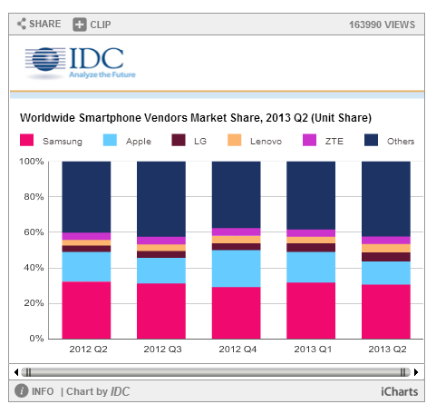
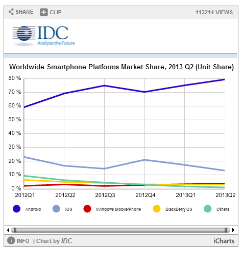

Pelabagai jenama dan model telefon dipasaran, mengikut laporan IDC, pengeluar utama mengikut rangking seperti berikut
Secara statistiknya:
| Vendor | 2Q13 Unit Shipments | 2Q13 Market Share | 2Q12 Unit Shipments | 2Q12 Market Share | Year-over-year Change |
|---|---|---|---|---|---|
| Samsung | 72.4 | 30.4% | 50.3 | 32.2% | 43.9% |
| Apple | 31.2 | 13.1% | 26.0 | 16.6% | 20.0% |
| LG | 12.1 | 5.1% | 5.8 | 3.7% | 108.6% |
| Lenovo | 11.3 | 4.7% | 4.9 | 3.1% | 130.6% |
| ZTE | 10.1 | 4.2% | 6.4 | 4.1% | 57.8% |
| Others | 100.8 | 42.4% | 62.8 | 40.2% | 60.5% |
| Total | 237.9 | 100.0% | 156.2 | 100.0% | 52.3% |
Secara grafnya:
Lima OS yang biasa digunakan di pasaran. Secara statistiknya:
| Operating System | 2Q13 Unit Shipments | 2Q13 Market Share | 2Q12 Unit Shipments | 2Q12 Market Share | Year-over-Year Change |
|---|---|---|---|---|---|
| Android | 187.4 | 79.3% | 108 69.1% | 73.5% | |
| iOS | 31.2 | 13.2% | 26 | 16.6% | 20.0% |
| Windows Phone | 8.7 | 3.7% | 4.9 | 3.1% | 77.6% |
| BlackBerry OS | 6.8 | 2.9% | 7.7 | 4.9% | -11.7% |
| Linux | 1.8 | 0.8% | 2.8 | 1.8% | -35.7% |
| Symbian | 0.5 | 0.2% | 6.5 | 4.2% | -92.3% |
| Others | N/A | 0.0% | 0.3 | 0.2% | -100.0% |
| Total | 236.4 | 100.0% | 156.2 | 100.0% | 51.3% |
Secara grafnya:
